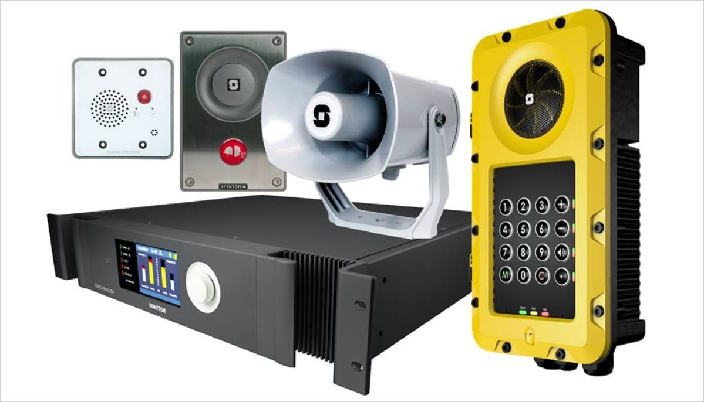

Sistema de Conferência:
Sistema conferência com fio eficiente, excelente inteligibilidade da voz com a tecnologia DAFS (Digital Acoustic Feedback Suppression) integrada, gravação de áudio integrada com memória interna e/ou pen USB, configurações e controle via Web browser, auto-off – economia de energia, modular e expansível até 245 dispositivos de debate.
Sistema conferência sem fio, máxima flexibilidade, zero interferências áudio, utiliza tecnologias de ponta, Wi-Fi standard e uma gestão sem fios inteligente para assegurar conferências isentas de interferências. Concebido para ser o mais flexível sistema de debate disponível, permite configurar e subdividir em pequenas reuniões e em conferências de maior dimensão de forma rápida e fácil, totalmente modular e de configuração simples.
Sistema de Conferência IP Áudio & Vídeo:
O novo padrão em conferência que faz tudo: gestão de debates, seleção de idioma, votação, funções multimídia, imagem de vídeo ao vivo, dupla utilização, acesso à Internet, visualização de documentos, integração e aplicações de outros sistemas terceiros e muito mais.
Sistema de Vídeo Conferência:
Melhorar a comunicação entre parceiros, investidores e consumidores que estão geograficamente dispersos é um dos requisitos para ficar à frente da concorrência. Uma videoconferência com qualidade traz benefícios que vão além das comunicações presenciais. Os requisitos indispensáveis para as soluções de videoconferência: qualidade de voz e vídeo nítidos e perfeitos, suporte para compartilhamento de conteúdo, baixa requisição de banda, fácil implantação e uso, principalmente para filiais que não contam com suporte presencial.
Sistema de Tradução Simultânea:
Tradução simultânea, em conferências internacionais com um ou vários idiomas, é obviamente essencial que todos os participantes compreendam o que é dito. É por isso que um sistema que permita a tradução simultânea através de intérpretes / tradutores é praticamente indispensável. As traduções são distribuídas pela sala de conferências para que os ouvintes possam selecionar o seu idioma e ouvi-lo através de fones de ouvido conectado à um receptor portátil. A transmissão através de tecnologia de infravermelho sem fio, o que permite aos ouvintes uma total liberdade de movimentos.
Intercom IP Industrial:

Linha completa de intercomunicadores IP industriais para ambientes críticos com altas e baixas temperaturas.
• Telefones IP54, IP66, IP67 e IP65 - ETB / CTB - Estações de intercomunicação SIP / IP
São soluções integradas de comunicação para aplicação em uma ampla gama de projetos de infraestrutura, tais como cabines de pedágio, aeroportos, assistência e emergência em estradas e túneis, docas e portos, sistemas de vigilância urbana, trens e metrôs. Sistemas totalmente compatível com vários tipos plataformas e subsistemas através de protocolos OPC e fornecimento do SDK.
É um portfólio de equipamentos de comunicação crítica que dispõe de hardware e software com alta qualidade de áudio. Basta pressionar um botão para requisitar apoio imediato. A voz do outro lado será ouvida alta e clara, eliminando mal-entendidos ou interpretações equivocadas. Sistemas e equipamentos com certificações ATEX, IEC Ex, NORSOK, EN54-16, ABS, DNV-GL
Sistema de Rádio Despacho:
O Sistema de Despacho de Rádio é uma forma de interconectar várias tecnologias de comunicação em situações críticas de emergências ou até mesmo em necessidades comerciais, industriais e do agronegócio.
Intercomunicar rádios de diferentes tecnologias (Analógicos, Digitais, UHF, VHF, P25, TETRA). Integrar rádios de mesma tecnologia em canais diferentes. Conectar rádios com telefonia fixa e móvel de todas as operadoras. Estender a cobertura dos rádios além do alcance das antenas. Gravar (e resgatar) a comunicação por rádio garantindo utilização adequada e investigação de ocorrências. Utilizar legado de rádios analógicos com licenças da Anatel. Reduzir custos de comunicação ineficiente.
Exemplo de conectividade em emergências em Cidades / Rodovias – Centro de Operações e Controle conectado com: Policia Militar, Bombeiros, Policia Rodoviária, Policia Federal, Guarda Municipal, Defesa Civil, SAMU, Transito, Assistência Social, Aeroportos, Cias de Energia, Gás e Água.